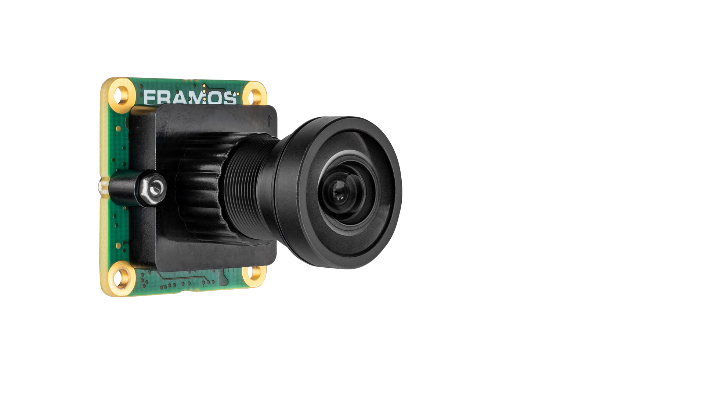

What is a Drone Camera?
A drone camera is used to capture images or video for mapping, surveillance,
inspection, and computer vision applications. It can also be used for
navigation in GPS-denied environments.
How Drone Cameras Work
The camera captures images of the environment during flight. These images
can be:
- Stored for mapping and analysis
- Streamed live to a ground station
- Processed onboard for object detection or navigation
Key Parameters
- Resolution: e.g., 1080p, 4K, or higher
- Field of View (FOV): Wide or narrow viewing angle
- Frame rate: Frames per second (FPS)
- Sensor size: Affects image quality and low-light performance
Types of Drone Cameras
- FPV cameras: For real-time piloting
- Mapping cameras: High-resolution still cameras
- Thermal cameras: For heat detection
- Depth cameras: For obstacle detection and navigation
Typical Use Cases
- Aerial photography and videography
- Mapping and surveying
- Search and rescue
- Object detection and tracking
Selection Tips
- Use high-resolution cameras for mapping
- Choose lightweight cameras for small drones
- Consider gimbal stabilization for smooth footage
Common Mistakes
- Using heavy cameras on small drones
- Ignoring vibration isolation
- Choosing low-resolution cameras for mapping missions